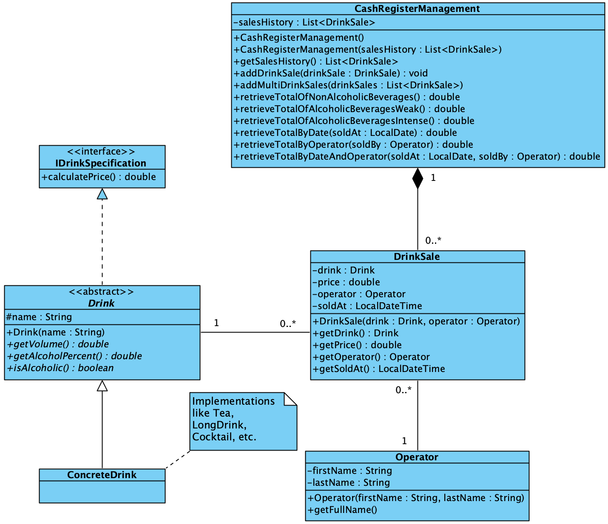

Design decisions
Cash register functionality
Task specification
The goal of the final task in the subject ‘Configuration Management’ is / was to implement a so called ‘Registrierkasse’ (in our implementation it is called CashRegisterManagement). This cash register should be able to sell custom created Drink products and store information about the sale itself (timestamp, price, Drink and Operator).
The actual selling process is of great importance, but equally important is analyzing and assessing the state of current sale figures. Because of that, different kind of reports are required, to achieve this goal and therefore manage the business in a successful manner.
Following reports were requested by THE customer
(total income = gross total income):
1. Total income per non-alcoholic beverages
2. Total income per weak-alcoholic beverages
3. Total income per intense-alcoholic beverages
4. Total income for a specific day
5. Total income generated by a specific Operator
6. Total income for a specific day, generated by a concrete Operator
Implementation details
All DrinkSales with their corresponding metadata are stored within a history, which is persisted in an administrative class (CashRegisterManagement). Next to a history typical timestamp, the DrinkSale data class holds information about the responsible Operator, the specific Drink and price included in the sale.

Note: The class diagram above does not include the entire project scope. It focuses on the cash register functionality.
From now on the abstract Drink class implements the IDrinkSpecification interface. We do this because every ConcreteDrink should implement the defined calculatePrice method in their own way. Alternatively, we could have declared the method head or an implementation in the abstract class itself. However, we would act against a requirement of the task. Therefore, and for diversification purposes we let all child classes implement the price calculation method.
As every ConcreteDrink uses its own implementation of the calculatePrice method, the actual retrieval process of the price is also different throughout the various realisations.
However, most ConcreteDrinks compute the price based on the amount of Liquids, the general alcohol percentage and volume included in the individual beverage.
Like in real world conditions extras within a beverage are more expensive (e.g. sweetener, sugar, etc.). Therefore, the calculation may additionally vary based on this fact.
Last but not least, there is another positive effect worth to mention. As we calculate and store the price during the sale creation process, we will always know the actual retail price. Even when the calculation method changes over time, the history will not be affected and therefore the general principal of a history is not violated (immutability).